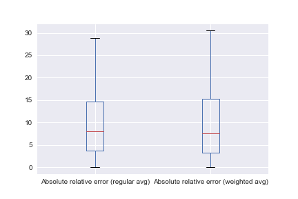
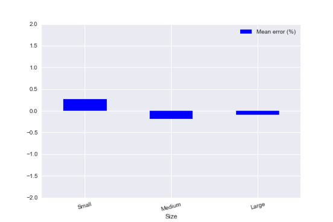

The science of opinion polling dates back nearly two centuries to the first "straw poll", conducted in 1824 in Delaware for that year’s presidential election. The first polls were crude and unrefined, and it would be over another century until polling methodology began to become more nuanced and precise, largely credited to George Gallup, pioneer of modern opinion polling. In the 1936 United States presidential election, this transition starkly played out between Gallup and The Literary Digest, a magazine that had correctly predicted the result of every prior election for two decades. The Digest’s poll, with an astronomically immense sample of 2.4 million people, predicted that Alf Landon would win the presidency by a 14-point margin. Gallup’s 50-thousand-person poll, meanwhile, predicted a decisive victory for President Roosevelt. Ultimately, Roosevelt won by a 24-point landslide, vindicating Gallup and embarrassing the Digest, and proving that a sample’s representativeness trumps its size; the Digest’s sample was largely composed of wealthier Americans—those who could afford automobiles, telephones, and magazines in the wake of the Great Depression—while the Gallup poll was more representative of the distribution of American voters. In the aftermath of this shock, the Digest went out of business, while Gallup soon grew to become a widely respected international institution.
Despite the gradual improvement of polling techniques in recent decades, however, there remains a level of inaccuracy, and it is not uncommon for election results to contradict polling predictions. Famously, in the 1992 United Kingdom general election, nearly every poll gave the Labour Party a narrow lead in the final days, but come election day, the Conservative Party won by a margin of nearly eight points. Naturally, with every polling miss, theories as to what caused the discrepancy arise and are explored. One popular theory suggests that, as in the aforementioned 1992 UK election, polls often underestimate the results of conservative candidates and parties because of what is called the "Shy Tory factor" —the idea that some poll respondents are afraid to say that they support a conservative party due to perceived social stigma, and that as a result their poll responses do not reflect their actual votes. Similarly, the “Bradley effect” suggests that the reason why Los Angeles Mayor Tom Bradley narrowly lost the 1982 California gubernatorial election to George Deukmejian despite leading in the polls was that voters did not want to declare their support for the white candidate over the black candidate for fear of seeming racist. The validity of these theories is debated: given the fact that conservatives are not always underestimated, many chalk up these phenomena to coincidence, pointing to Barack Obama’s two victories that were accurately predicted by polls; others suggest that there are other factors playing into the underperformance of Labour in 1992 and Bradley in 1982, citing that correlation does not necessarily imply causation; and some assert that the effect used to exist but no longer does. Among these other factors could be more simple phenomena such as nonresponse bias, where groups that do not respond to polls may be more likely to vote a certain way, or inaccurate weighting, where pollsters underestimate or overestimate the voter turnout of certain groups.
Without even delving further into possible explanations for polling errors, however, there is also contention over what systematic errors actually exist—whether, for example, polls generally overestimate left-leaning parties and underestimate right-leaning ones, or overestimate centrist establishment parties and underestimate left-wing and right-wing anti-establishment ones, or a plethora of other assertions. To answer this underlying question, I will explore the nature of discrepancies between poll results and actual election results in European countries.
I gathered data from 29 elections from 8 different countries. For each of these elections, I catalogued the final election result, the results of the ten polls leading up to the election, and a number of characteristics about each party: its political position, its European affiliation, its size (large, medium, or small), its government status (government, opposition, or confidence and supply), and whether it grew or shrank from the previous election. Using the poll results and election results, I calculated a number of additional indicators for each party in each election: the standard deviation of the ten polls’ results, the absolute error (the difference between the average of the final ten polls and the election result), and the relative error (the absolute error divided by the result), as well as the absolute and relative error for the weighted poll average (calculated by subtracting the average of the first five of the ten polls from twice the average of the last five of the ten polls). I used these values and characteristics to produce my results and conclusions.
The first comparison I explored is between the accuracy of the regular average and the weighted average, using a box-and-whisker plot. where I plotted the absolute error and the absolute relative error.
The data indicates that using a weighted average as opposed to a regular average makes little difference in error. Comparing the means and medians shows that the weighted average produces a marginally lower median error, but as it is more positively skewed, it produces a marginally higher mean error:
| Mean | Median | |
|---|---|---|
| Absolute error (regular avg) | 1.352761 | 0.96 |
| Absolute error (weighted avg) | 1.377239 | 0.95 |
| Absolute relative error (regular avg) | 11.315828 | 8.05 |
| Absolute relative error (weighted avg) | 12.555153 | 7.54 |
As it can be reasonably concluded that the difference in errors is negligible, I will be conducting the rest of the analysis using the regular average only, as it is a more conventional and simple method, and comparing results using only one method eliminates redundancy.
Following the previous comparison, the first connection I explored is that between the polling error and the standard deviation of the ten polls. Because comparing standard deviation to relative error is inconsistent as standard deviation generally tends to increase with greater values, I did not plot the standard deviation against the absolute relative error; indeed, the Pearson correlation coefficient between the two is a mere 0.0408.
There is a weak to moderate correlation between standard deviation and absolute error; the Pearson coefficient is 0.3858. This is unsurprising; a greater standard deviation of poll results may imply greater uncertainty over the true percentage and furthermore increases the range of individual errors from the final result, thus increasing the likelihood that the average polling error is greater.
Between the eight countries included in the dataset, there is variance in the average polling error. I took the absolute value of the mean absolute and mean relative errors for all elections in each country and compared them in a bar graph.
In both the absolute and relative error plots, Iceland and the United Kingdom had the greatest mean polling error. There are plausible but different explanations for both. Iceland’s error can potentially be attributed to its exceptionally small population of 350 thousand, which can make it more difficult to gather a representative sample, similarly to the notable inaccuracy of local-level polls in other countries. As for the United Kingdom, it is possible that its first-past-the-post (FPTP) electoral system, which differentiates it from the rest of the countries in the dataset (which have proportional systems, or in the case of Ireland, single transferable vote), plays a factor. Because of the presence of tactical voting and phenomena such as the “spoiler effect”—whereby votes for minor parties are often considered “spoilers” in that they potentially take away votes from the top two finishers—which exist in FPTP but not in proportional systems, it is possible that many voters indicate to pollsters that they will vote for a certain party but change their minds on election day due to the strategic implications of their intended votes. In these ways, Iceland and the United Kingdom are unique from the other six countries in the dataset.
Using the five characteristics attributed to each party in each election, I then sorted the dataset and produced bar chart comparisons for the mean absolute and mean relative polling errors between categories of characteristics. A negative error means that polls underestimated the actual result, while a positive error means the opposite. The first of five characteristics I examined was the parties’ political positions, which I split up into six categories: left-wing, center-left, center, center-right, right-wing, and far-right (the presence of far-left parties in the dataset was ephemeral), based on the parties’ ideologies and general consensus on their political positions.

The data suggests that more left-leaning parties are overestimated in polls, while more right-wing parties are underestimated, though curiously, the relatively significant underestimation shown for right-wing parties with the mean error evaporates with the mean relative error. While one might be inclined to simply draw the conclusion that the more left-wing a party is, the more it is overestimated in polls, a more specific ideological categorization provided by the parties’ European affiliation paints a slightly different image.
There are a number of conclusions to draw from this; I will first, however, summarize my European Parliament ideological categorizations to increase clarity.
I categorized each party in each election to the European Parliament group it sat in at the time of the respective election. If the party did not have any European Parliament seats or was not in a European Union member state, I categorized it with the European Parliament group that the other members of its European party sat with; for example, I categorized the Pirate Party of Iceland with G/EFA, as that is the group that the European Pirate Party is affiliated with and that the Pirate Party Germany’s MEP sits with.
| European Parliament Group | Instances in Dataset | Categorization | Political Position | Ideology | European Stance |
|---|---|---|---|---|---|
| European United Left-Nordic Grean Left | 25 | Socialist | Left Wing | Democratic Socialism | Soft Eurosceptic |
| Progressive Alliance of Socialists and Democrats | 30 | Social Democratic | Center-left | Social Democracy | Pro-European |
| Greens-European Free Alliance | 18 | Green/Regionalist | Center-left | Green Politics; Regionalism | Pro-European |
| Alliance of Liberals and Democrats for Europe | 29 | Liberal | Center | Social Liberalism; Conservatie Liberalism | Pro-European |
| European People's Party | 35 | Conservative | Center Right | Liveral Conservatism; Christian Democracy | Pro-European |
| European Conservatives and Reformists | 5 | Nationalist | Center-right to Right Wing | National Conservatism; Christian Democracy | Soft Eurosceptic |
| Union for Europe | 1 | Nationalist | Center-right to Right Wing | Conservatism | Unknown |
| Europe of Freedom and Direct Democracy | 5 | Nationalist | Right Wing | Right-wing Populism | Eurosceptic |
For five of the six categorizations, the two charts paint a roughly similar picture. In line with the results of the political position comparison, there is again an indication of polls overestimating left-leaning parties, but the added distinction provided by this comparison suggests a particularly strong polling bias toward green parties, compared to a more muted one toward socialist and social democratic parties.
Despite the virtual non-existence of this concept in the United States, in many countries, particularly those with proportional representation, coalition governments are common if not the norm. In a coalition government, when no party has an absolute majority of seats, multiple parties join together to achieve a majority and form government together. There are also often cases where a coalition does not have a majority but achieves a working majority by forming a confidence and supply agreement with another party or parties. The parties providing confidence and supply are not part of the government, holding no cabinet positions, but agree to vote in favor of the government on motions of confidence and budget in order to prevent the government from failing. I compared the average polling error between parties in government, those in confidence and supply, and those in opposition in the term prior to the respective election. Curiously, parties in confidence and supply have a significantly greater (positive) error.

I compared average polling error between parties that grew compared to their previous election result and those that shrank.

Parties that shrank seem to have a reasonably greater relative error. Because a shrinking party, due to its reduction in support, may be smaller than a larger party, there may be a connection with the comparison of average polling error based on party size. I arranged parties into three categories: “Small”, with a vote share of less than 10%; “Medium”, with a vote share of 10% to 20%, and “Large”, with a vote share of greater than 20%.
The average polling error of small parties is slightly greater in magnitude of that of medium parties, which is slightly greater in magnitude than that of large parties. Because the same absolute error is a greater relative error for a smaller party, this disparity is significantly magnified when comparing relative error. It is expected that small parties will have greater relative error than larger parties, but the scale of the disparity, as well as the fact that small parties also have greater absolute error, is surprising. It may be additionally useful, however, to make the same comparison with the absolute value taken of each error, as was done for the country comparison.
Indeed, this paints a different picture. While, as expected, the relative error increases with smaller parties, the opposite is the case with the absolute error; large parties have the greatest error, while small parties have the least. In the context of the polling process, this makes sense; polls' margins of error decrease for lower percentages.
Given the patterns found in the above comparisons, it is certainly possible that some characteristics are linked to each other, with potential relations between two categories causing patterns to be carried over. For example, a comparison of the median size of parties with each characteristic:
| Political Position | Median Result |
|---|---|
| Left-wing | 7.9% |
| Center-wing | 25.7% |
| Center | 8.9% |
| Center-right | 28.8% |
| Right-wing | 8.7% |
| Far-right | 12.8% |
| European Affiliation | Median Result |
|---|---|
| Socialist | 8.0% |
| Social Democratic | 30.2% |
| Green/Regionalist | 5.2% |
| Liberal | 8.3% |
| Conservative | 30.1% |
| Nationalist | 12.9% |
| Government Status | Median Result |
|---|---|
| Government | 21.8% |
| Conf & Supply | 5.8% |
| Opposition | 14.9% |
| Change in Size | Median Result |
|---|---|
| Grew | 16.6% |
| Shrank | 16.2% |
In summary, the data suggests clear patterns present in most characteristic distinctions. Left-leaning parties generally are overestimated, while right-leaning parties are underestimated. The aforementioned Shy Tory factor is a possible explanation, but there are two more likely contributors: inaccurate estimations of turnout, wherein pollsters may underestimate or overestimate voter turnout among certain demographics, and nonresponse bias, a persistent and inherent issue with polling wherein the demographic breakdown of the nonrespondents (e.g. those that don’t pick up the phone for a telephone poll) is different from that of the respondents, thus altering the poll’s sample in a way that is more difficult to correct with demographic weighting.
Among left-leaning parties, green parties are particularly overestimated. This could be because green parties, particularly in Europe, often play the niche of alternative parties, being seen as more anti-establishment than their mainstream social democratic counterparts. It is thus possible that some left-leaning voters declare their voter intentions for green parties to take an anti-establishment stance but ultimately return to their traditional party.
While parties in government and those in opposition have similar errors, those in confidence and supply have a pronounced positive error. One simple explanation is that only 6 of the 163 parties in the sample were in confidence and supply (compared to 51 in government and 106 in opposition), so outliers and random chance could easily offset the small sample. Furthermore, four of these six were left-wing parties, so their errors can reasonably be attributed to the aforementioned reasons.
Finally, while the lesser absolute error of small parties is logical due to the fact that the margin of error of a poll is lower for lower percentages, small parties’ greater relative error can be viewed as a parallel to the greater error of green parties. With small parties generally being more likely to be outside the establishment by their very nature, some voters could again be placing their support with these parties between the elections before changing back in the voting booth.
While the insights from this data shed light onto the inherent and implicit biases of polls, there is much more information that can hypothetically be gathered were the appropriate data to be gathered. It would be interesting to see surveys on voter psychology, allowing analysts to be more in tune with the mindset of the average voter, furthermore helping improve the accuracy of opinion polls.